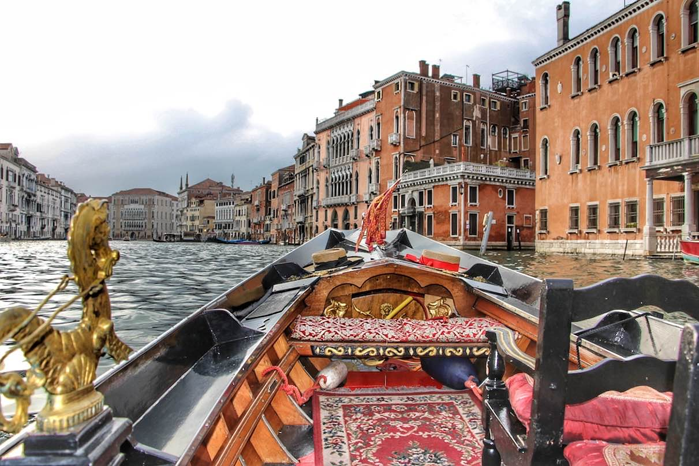
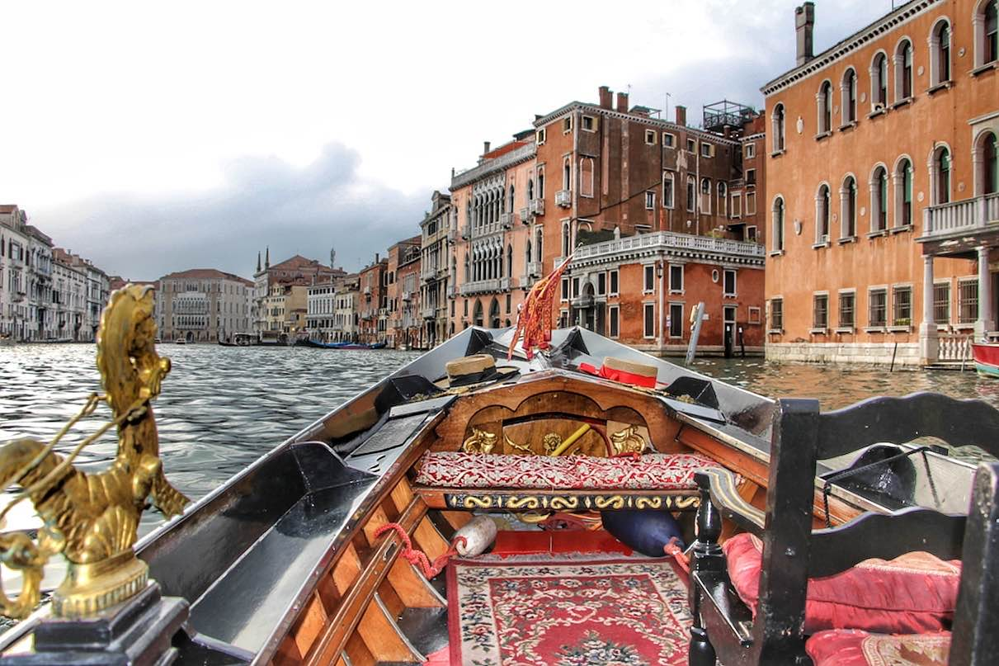
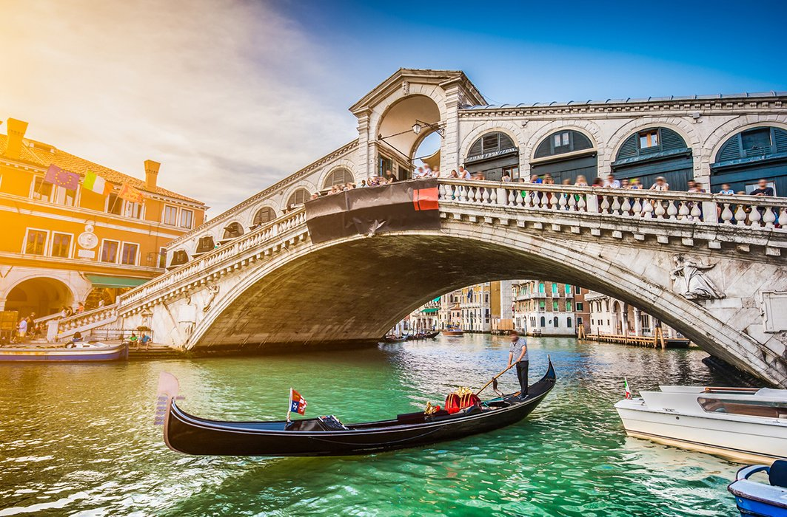
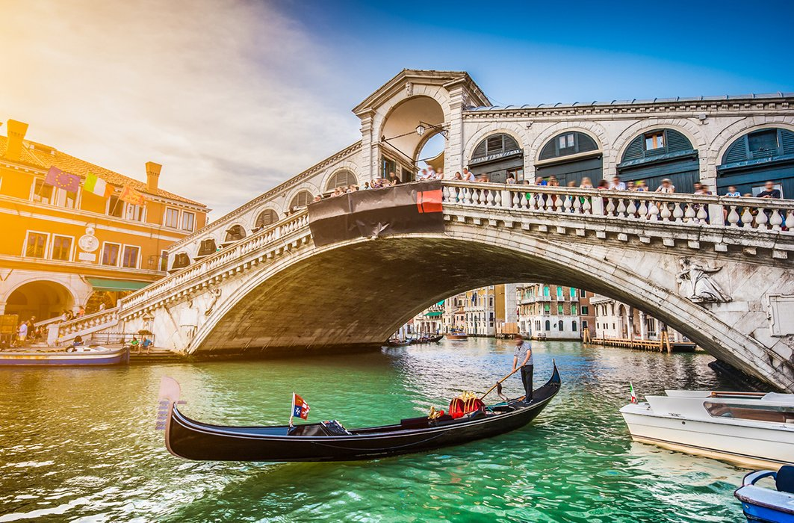
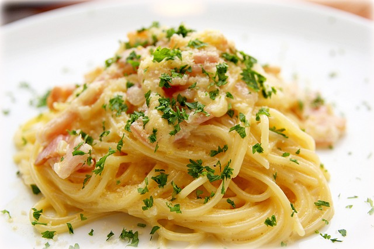
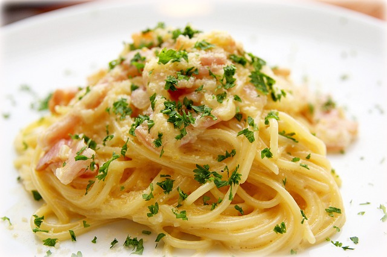

VENISE
Venise est une ville portuaire du nord-est de l’Italie, sur les rives de la mer Adriatique. ses envoûtants palais, sa vie culturelle intense et sa gastronomie, difficile de résister au charme de la belle italienne. Venise n'a jamais fini de dévoiler ses trésors. Si vous aimez l'artisanat, Venise est également très connue pour avoir des artisans travaillant le verre. Durant votre balade en vous perdant dans les ruelles aux alentours de la place Saint-Marc, vous pourrez entrer dans la boutique de plusieurs artistes pour éventuellement acheter un souvenir. Pour information, la construction de la célèbre gondole constitue une grande partie de l’artisanat de Venise. Si vous aimez la peinture, allez aux Galeries de l'Académie de Venise. Vous y découvrirez beaucoup de peintures vénitiennes. De façon plus générale, Venise est une ville incontournable à voir puisqu’elle fait partie du patrimoine mondial de l’UNESCO. La place la plus célèbre dans le centre ville est la place Saint-Marc (San Marco en italien) où vous verrez la Basilique San Marco, le Palais des Doges ainsi que le Campanile (le clocher de la Basilique Saint-Marc, qui est d’ailleurs l’édifice le plus haut de Venise avec environ 100 mètres de haut). Au-delà des endroits magnifiques précédemment évoqués, Venise (que l’on appelle aussi la Cité des Doges) est connue pour son carnaval. Durant cette fête qui se déroule depuis le Moyen-age, on y porte des masques et des costumes. Autrefois, on portait des masques pour conserver l’anonymat et ne pas se faire reconnaître durant le carnaval. Cette fête est également connue pour la Fête des Maries, qui regroupe les 12 plus belles femmes de Venise! Traditionnellement, il commence 10 jours avant le mercredi des Cendres et termine durant le Mardi Gras. Dans la pratique, si vous souhaitez assister au carnaval, nous vous conseillons de bien vérifier sur Internet les dates du prochain carnaval. En conclusion, visiter Venise est une expérience unique, pas seulement pour les couples qui souhaitent passer un week-end romantique en amoureux, mais pour toute personne intéressée par la culture et l’architecture italienne. Vous découvrirez tout sur la République de Venise et son histoire.
Le Palais des Doges, également connu sous le nom de Palazzo Ducale, est un monument emblématique situé au cœur de Venise, en Italie. Le palais était la résidence officielle du doge, le leader élu de l'ancienne République vénitienne, et a servi de siège du gouvernement pendant plusieurs siècles. Aujourd'hui, c'est une attraction touristique populaire qui offre aux visiteurs un aperçu de l'histoire et de la culture riche de Venise. Le palais abrite une impressionnante collection d'œuvres d'art, dont des peintures de célèbres artistes vénitiens tels que Titien, Tintoret et Véronèse. Les visiteurs peuvent explorer les salles et les chambres ornées du palais, décorées de fresques exquises, de sculptures complexes et de meubles opulents. L'une des caractéristiques les plus impressionnantes du palais est l'escalier d'or, qui mène aux appartements du doge et est décoré d'un étonnant feuillage doré. Avec son histoire riche, son architecture stupéfiante et sa collection d'art de classe mondiale, le Palais des Doges est une destination incontournable pour tout visiteur de Venise.
 

Une promenade en gondole sur le Grand Canal est l'une des expériences les plus emblématiques de Venise, en Italie. Le Grand Canal est la principale voie navigable de la ville, bordée de grands palais, de villes historiques et de ponts pittoresques. Les gondoles sont des bateaux traditionnels vénitiens, longs et étroits, propulsés par un gondolier qualifié à l'aide d'une seule rame. Une promenade en gondole sur le Grand Canal est un moyen agréable et romantique d'explorer la ville, alors que vous glissez le long des eaux scintillantes du canal et admirez les sites et les sons impressionnants de Venise. Alors que vous dérivez près de palais anciens et de monuments historiques, votre gondolier vous contera des histoires et des légendes de Venise, ajoutant une touche d'enchantement à votre expérience. Que vous voyagiez seul ou avec un être cher, une promenade en gondole sur le Grand Canal est un moyen inoubliable de découvrir la beauté et la magie de Venise.
La basilique Saint-Marc est un symbole emblématique de Venise. Conçue à l'origine pour servir de chapelle privée au Doge, l'église a joué au fil des siècles un rôle important dans la vie religieuse et politique de la ville. La basilique a été construite pour garder les reliques de Saint-Marc « l'évangéliste », qui ont été volées à Alexandrie, en Égypte. Également connue sous le nom d'« Église d'or », la basilique Saint-Marc est célèbre pour la dominance de ses mosaïques dorées, un spectacle à ne pas manquer dans le monde de l'art. Découvrez les trésors inestimables conservés dans la basilique pour perfectionner les mosaïques. La basilique Saint-Marc, également connue sous le nom de Basilique di San Marco, est l'un des monuments les plus emblématiques de Venise, en Italie. Cette belle église est située au cœur du quartier historique de la ville et est renommée pour son architecture byzantine et ses mosaïques complexes. La basilique a été construite au XIe siècle et est nommée d'après Saint-Marc, le saint patron de Venise. Les visiteurs de la basilique peuvent admirer son extérieur orné, avec ses sculptures complexes, ses arcs et ses dômes, avant de pénétrer à l'intérieur pour voir son intérieur impressionnant. L'intérieur de la basilique est décoré de mosaïques étonnantes qui couvrent presque chaque surface, représentant des scènes de la Bible et de la vie des saints. L'une des caractéristiques les plus célèbres de la basilique est la Pala d'Oro, un exquis retable en or, argent et pierres précieuses. Les visiteurs peuvent également monter au sommet du clocher de la basilique pour des vues imprenables sur la ville. Avec son architecture étonnante, son histoire riche et sa collection d'art inestimable, la basilique Saint-Marc est une destination incontournable pour tout visiteur de Venise.
 

Le pont du Rialto est l'un des monuments les plus emblématiques de Venise, en Italie. Ce pont magnifique enjambe le Grand Canal et est un témoignage de l'histoire et de la culture riches de la ville. Le pont a été construit à la fin du XVIe siècle et était originellement une structure en bois, mais a été remplacé par le pont en pierre actuel au XVIe siècle. Aujourd'hui, le pont du Rialto est l'un des monuments les plus célèbres et les plus photographiés de Venise. Les visiteurs peuvent se promener sur le pont, en admirant les vues imprenables sur le Grand Canal et l'architecture vibrante de la ville. Sur le pont, il y a de nombreux magasins et étals vendant une variété de souvenirs, y compris de la verrerie artisanale, des bijoux et des textiles. En traversant le pont, vous ressentirez l'énergie et l'excitation de Venise, entouré de l'agitation des habitants et des touristes. Que vous admiriez le pont de loin ou que vous traversiez, le pont du Rialto est une destination incontournable qui incarne la beauté et l'esprit de Venise. La structure du pont actuel ressemble à celle des ponts précédents. Il comporte deux rangées inclinées de maisons qui forment un circonflexe, toutes deux reliées par un double portique au centre. N'importe quelle heure pour visiter le Pont du Rialto est la bonne.
Les îles de Murano, Burano et Torcello sont un groupe de petites îles situées dans la lagune vénitienne, à seulement un court trajet en bateau de Venise, en Italie. Chaque île a son propre charme et caractère unique. Murano est célèbre pour sa tradition séculaire du soufflage du verre, et les visiteurs peuvent regarder les artisans qualifiés créer des objets en verre exquis dans les nombreux ateliers et studios de l'île. Burano est connue pour ses maisons colorées et sa dentelle complexe, et les visiteurs peuvent flâner dans ses rues étroites et admirer l'architecture colorée et la dentelle délicate. Torcello, la plus éloignée et la moins peuplée des trois îles, a une histoire riche et plusieurs monuments anciens, notamment la cathédrale de Santa Maria Assunta du VIIe siècle et le Trône d'Attila, un siège en pierre datant du Ve siècle. Les îles de Murano, Burano et Torcello offrent aux visiteurs un aperçu d'une culture unique et fascinante et sont une destination incontournable pour tout voyageur se rendant à Venise.
Venise et artisanat sont intrinsèquement liés. Capitale historique de l'art et du commerce, venise possède encore un artisanat unique. L’artisanat de venise est encore très vif et en flanant et vous perdant dans ses ruelles, vous pourrez trouver des endroits magiques. La ville de Venise a pendant des siècles permis le développement de nombreuses activités artisanales, dont aujourd’hui, malheureusement, seules quelques-unes ont survécu. C’est un patrimoine à protéger. Nous vous portons donc à sa découverte. Verre de murano, parfum, masques en papier mâché, travail de l’or, construction de gondoles. Eloignez-vous de la place saint marc et perdez vous dans les ruelles! Le développement économique de Venise a été grandement favorisé par sa position géographique particulière, sur la route de la soie, et ses liens forts avec l’orient. De cette époque glorieuse du commerce et de l’artisanat, on retrouve de nombreuses traces dans la toponymie locale, comme certaines rues près du marché Rialto et San Marco. Le verre de Murano est un véritable art. En vous promenant sur l’île, vous vous rendrez compte de l’habileté des maîtres verriers. Ils sont capables d’accomplir des prouesses : des alchimistes de la matière en quelque sorte. Cet art a commencé à se développer autour du XIIIe siècle à Venise, mais a été déplacé à Murano précisément à cause des risques d’incendie liés à l’utilisation des fours qui mettaient en danger la ville. D’autres sources prétendent que l’activité du verre a été déplacée à Murano pour mieux pouvoir en préserver les secrets ! La visite d’une verrerie à Murano (fornace) vaut sans aucun doute la peine. Si vous souhaitez faire des emplettes, tous le smagasins n’offrent pas du « made in venice » ; les pièces chinoises sont nombreuses et pas toujours facile à reconnaitre. Vous pouvez cosnulter cet article pour reconnaitre le vrai verre de Murano. Si vous souhaitez soutenir une venise alternative et une économie humaine, entrez dans les boutiques de ces artisans, choisissez soigneusement le souvenir ou cadeau à ramener. Lorsque les derniers artisans disparaitront, ce sera Venise elle meme qui sera engloutie. Vous pourrez rentrer tranquillement ensuite dans une venice dysneland pour voir le parc d’atttraction et y faire quelque photos. Mais son ame ne sera plus là !
 

Vous partez visiter Venise, une ville dont les charmes ne sont plus à vanter, quelle chance ! Il ne vous reste plus qu’à réserver votre location de vacances et à glaner quelques renseignements sur les spécialités italiennes… Cité des amoureux et des arts, cette ville magnifique regorge de trésors visuels. Venise est connue pour son histoire et sa beauté mais elle recèle d’autres spécificités dont on parle moins mais qui ont aussi une grande importance. La gastronomie vénitienne est également une richesse qu’il faut découvrir et déguster pendant un séjour sur place. Cette cuisine est réputée pour sa diversité et sa finesse. Elle est issue de l’histoire riche de la cité lacustre, de la lagune, de la mer et de la plaine du Pô. À Venise, les spaghettis sont aussi à l’honneur avec le Bigoli in salsa. Ces spaghettis sont plus courts et plus épais que les traditionnels. Ils sont cuits al dente et mélangés ensuite avec des anchois et des oignons caramélisés. Ce plat fait honneur à la cité romantique et reste l’une des meilleures spécialités locales.